AES алгоритмининг математик асослари
AES шифрлаш алгоритмида байтлар устида амаллар бажарилади. Байтлар GF(28) чекли майдон элементлари сифатида каралади. GF(28)
майдон элементларини даражаси 7 дан катта бўлмаган кўпхад сифатида тасвирлаш
мумкин. Агарда байтлар 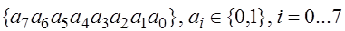
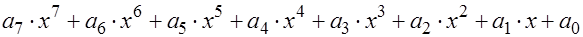
Мисол учун {11010101} байтга x7+x6+x4+x2+a0 кўринишдаги кўпхад мос келади.
Чекли 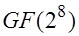
Кўпхадларни кўшиш
AES алгоритмида кўпхадларни кўшиш 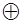 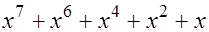 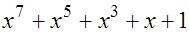
ва
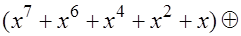 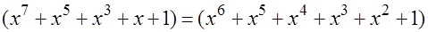
Бу амал иккилик ва ўн олтилик санок системаларида куйидагича ифодаланади:
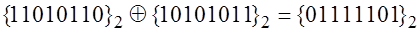 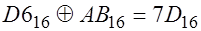
Чекли майдонда исталган нолга тенг бўлмаган a элемент учун унга тескари бўлган –a элемент мавжуд ва a+(–a)=0 тенглик ўринли, бу ерда нол элементи сифатида {00}16 каралади. GF(28) майдонда aAa=0 тенглик ўринли.
Кўпхадларни кўпайтириш
AES алгоритмида кўпхадларни кўпайтириш куйидагича амалга оширилади:
·иккита кўпхад ўнлик санок системасида кўпайтирилади;
·еттинчи даражадан катта бўлган хар кандай кўпхадни саккизинчи даражали j(x)=x8+x4+x3+x+1 келтирилмайдиган кўпхадга бўлганда колдикда етти ва ундан кичик бўлган даражадаги кўпхадлар хосил бўлиб, улар натижа сифатида олинади, бунда бўлиш жараёнида бажариладиган айириш амали иккилик санок системасида, юкорида келтирилгани каби, A амали асосида бажарилади.
Ана шундай килиб киритилган кўпайтириш амали билан белгиланади.
Масалан. 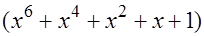 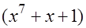
Ушбу кўпхадлар ўнлик санок системасида
кўпайтирилади 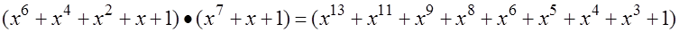
Натижа j(x)=x8+x4+x3+x+1 келтирилмайдиган кўпхадга бўлинади ва колдик олинади:
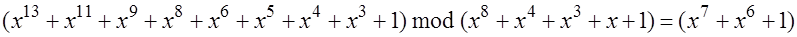
Хакикатан хам 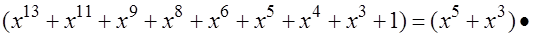 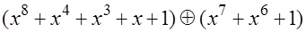
Машклар. Куйидагиларни хисобланг:
1) x9+x5+x3+x+1 (mod j(x));
2) f(x)=x7+x3+x2+x, g(x)=x6+x4+x2+1, f(x)*g(x) (mod j(x));
3) f(x)=x7+x3+x2+x, g(x)=x6+x4+x2+1, ЭКУБ(f(x),g(x)).